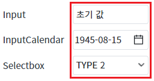
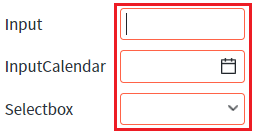
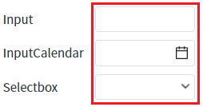

jQuery 문법을 사용하여 웹스퀘어 컴포넌트의 함수를 체이닝 기법으로 호출합니다. 이 예제는 컴포넌트의 'ID Selector'를 사용하여 구현되었습니다.
jQuery 문법으로 반환된 Dom 객체를 직접 제어하는 것은 금지합니다. (Dom을 직접 제어하여 발생하는 오류는 책임지지 않습니다.)
jQuery 문법은 가이드에 따라 컴포넌트의 함수를 호출하는 용도로 사용하는 것을 권장합니다.
jQuery 문법을 사용하여 웹스퀘어 컴포넌트의 함수를 체이닝 기법으로 호출하기
STEP 1. 초기 상태를 확인합니다.
컴포넌트 Input, InputCalendar, Selectbox에 초기 값이 할당되어 있고 각 컴포넌트의 테두리는 회색 계열로 적용되어 있습니다.
그림 1.브라우저(Chrome) 실행 예시

STEP 2. jQuery 체이닝 기법으로 각 컴포넌트에 빈 값을 할당하고 CSS class 추가하기
버튼 각 컴포넌트에 빈 값을 할당하고 CSS class 추가하기를 클릭합니다.STEP 3. 실행된 결과를 확인합니다.
각 컴포넌트에 빈 값이 할당되고 컴포넌트의 테두리가 붉은색 계열로 적용됩니다.
그림 2.브라우저(Chrome) 실행 예시

STEP 4. jQuery 체이닝 기법으로 컴포넌트에 추가된 CSS class 제거하기
버튼 추가된 CSS class 제거하기를 클릭합니다.STEP 5. 실행된 결과를 확인합니다.
각 컴포넌트의 테두리가 회색 계열로 돌아옵니다.
그림 3.브라우저(Chrome) 실행 예시

'$p' 객체의 함수 '$'를 사용하여 컴포넌트를 받아 함수 'wq'를 사용하여 컴포넌트의 함수를 호출합니다. 세부 스크립트는 아래의 예시에 작성되어 있습니다.
스크립트
// 예제 파일에서는 스크립트 'scwin.btn_exam1_1_onclick', 'scwin.btn_exam2_1_onclick'에 작성되어 있습니다. // Input 'ibx_exam1', InputCalendar 'ica_exam1', Selectbox 'sbx_exam1'의 컴포넌트 함수 'setValue', 'addClass'를 호출합니다. $p.$("#ibx_exam1:wq, #ica_exam1:wq, #sbx_exam1:wq").wq("setValue","").wq("addClass","P00324_highlight"); /** * 다음은 상단의 스크립트를 나누어 주석을 작성하였습니다. */ // 1. ID Selector로 컴포넌트의 DOM 객체를 반환받습니다. // 하나의 문자열에 컴포넌트의 구분자는 ','를 사용합니다. // ID Selector는 "#"+컴포넌트 ID+":wq"로 구성되어 있습니다. 마지막 ":wq" 문자열은 웹스퀘어 컴포넌트만 추출하기 위한 키워드입니다. // '$p' 객체를 사용하면 이 함수가 호출되는 화면의 컴포넌트에서 추출합니다. let arrCmp = $p.$("#ibx_exam1:wq, #ica_exam1:wq, #sbx_exam1:wq"); // 2. 컴포넌트의 함수 호출하기 // 반환된 배열에 함수 'wq'를 호출하여 인자에 함수명, 함수에 전달할 인자 순으로 지정합니다. arrCmp = arrCmp.wq("setValue",""); arrCmp = arrCmp.wq("addClass","P00324_highlight"); // 컴포넌트 함수의 인자가 2개 이상인 경우 아래와 같은 형식으로 인자를 추가합니다. arrCmp = arrCmp.wq("changeClass","P00324_highlight", "P00324_default");
jQuery 체이닝 스크립트 작성 시 주의 사항입니다.
주의 사항 1)
'wq'의 첫 번째 인자로 지정한 함수명이 컴포넌트에 없는 함수이면 스크립트 오류가 발생합니다.
주의 사항 2)
'wq'의 첫 번째 인자로 지정한 함수에 반환 값이 있으면 체이닝은 종료됩니다.
(함수 'getValue', 'getID' 등이 해당합니다.)
$p.$